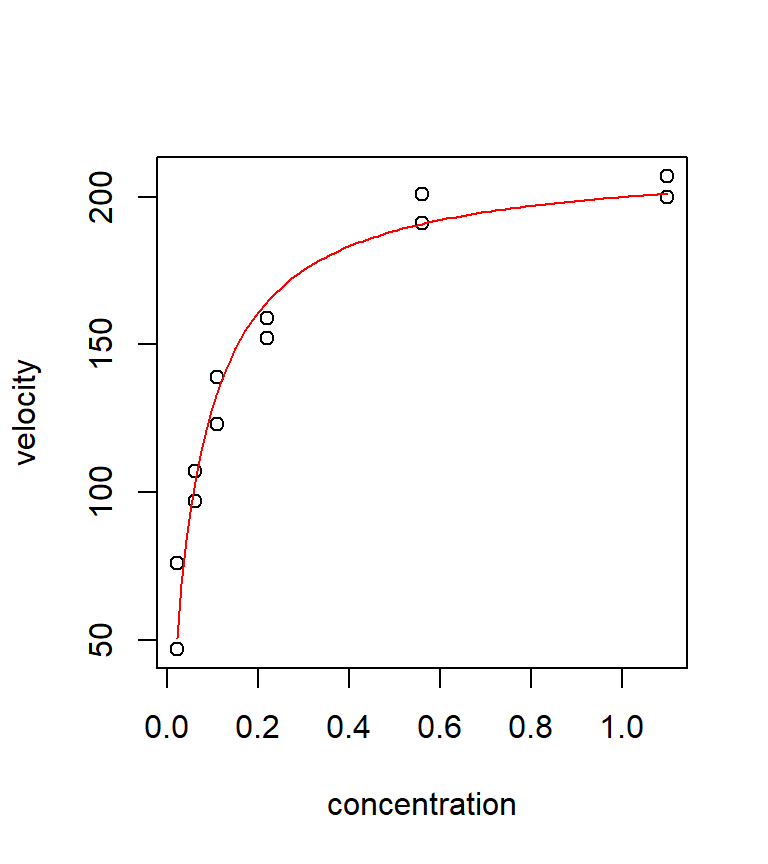
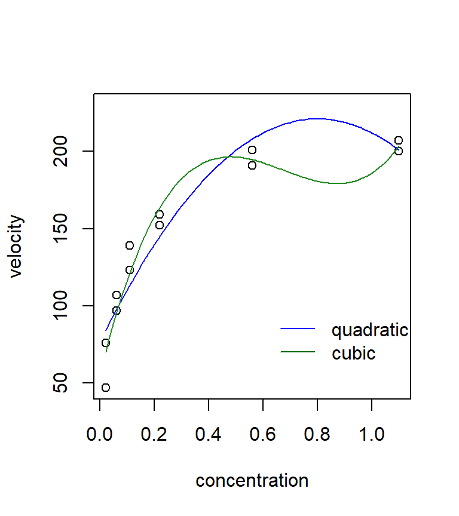

Chapter 3 Non-linear regression models
In this chapter, we examine several methods for characterizing non-linear associations between a predictor variable and the response. To keep things simple, we return to focusing on settings with a single predictor. However, the ideas in this chapter can readily be incorporated into models with several predictor variables.
3.1 Polynomial regression
Polynomial regression uses the machinery of multiple regression to model non-linear relationships. A \(k^{th}\) order polynomial regression model is \[ y=\beta_0 +\beta_1 x+\beta_2 x^2 +\beta_3 x^{3} +\ldots +\beta_k x^{k} +\varepsilon \] where the error term is subject to the standard regression assumptions. In practice, the most commonly used models are quadratic (\(k=2\)) and cubic (\(k=3\)) polynomials.
Before proceeding, a historical note is worthwhile. It used to be that polynomial regression was the only way to accommodate non-linear relationships in regression models. In the present day, non-linear least squares allows us to fit a much richer set of non-linear models to data. However, in complex models (especially complex ANOVA models for designed experiments), there are still cases where it is easier to add a quadratic term to accommodate a non-linear association than it is to adopt the machinery of non-linear least squares. Thus, it is still worthwhile to know a little bit about polynomial regression, but don’t shoehorn every non-linear association into a polynomial regression if an alternative non-linear model is more suitable.
Example. In the cars data, the relationship between highway mpg and vehicle weight is clearly non-linear:
cars <- read.table("data/cars.txt", head = T, stringsAsFactors = T)
with(cars, plot(mpghw ~ weight, xlab = "Vehicle weight (lbs)", ylab = "Highway mpg"))
To fit a quadratic model, we could manually create a predictor equal to weight-squared. Or, in R, we could create the weight-squared predictor within the call to “lm” by using the following syntax:
##
## Call:
## lm(formula = mpghw ~ weight + I(weight^2), data = cars)
##
## Residuals:
## Min 1Q Median 3Q Max
## -13.4386 -1.8216 0.1789 2.3617 7.5031
##
## Coefficients:
## Estimate Std. Error t value Pr(>|t|)
## (Intercept) 9.189e+01 6.332e+00 14.511 < 2e-16 ***
## weight -2.293e-02 3.119e-03 -7.353 1.64e-11 ***
## I(weight^2) 1.848e-06 3.739e-07 4.942 2.24e-06 ***
## ---
## Signif. codes: 0 '***' 0.001 '**' 0.01 '*' 0.05 '.' 0.1 ' ' 1
##
## Residual standard error: 3.454 on 136 degrees of freedom
## Multiple R-squared: 0.7634, Adjusted R-squared: 0.7599
## F-statistic: 219.4 on 2 and 136 DF, p-value: < 2.2e-16In the quadratic regression \(y=\beta_0 +\beta_1 x+\beta_2 x^2 +\varepsilon\), the test of \(H_0\): \(\beta_2=0\) vs. \(H_a\): \(\beta_2 \ne 0\) is tantamount to a test of whether the quadratic model provides a significantly better fit than the linear model. In this case, we can conclusively reject \(H_0\): \(\beta_2=0\) in favor of \(H_a\): \(\beta_2 \ne 0\) , and thus conclude that the quadratic model provides a significantly better fit than the linear model.
However, in the context of the quadratic model, the test of \(H_0\): \(\beta_1=0\) vs. \(H_a\): \(\beta_1 \ne 0\) doesn’t give us much useful information. In the context of the quadratic model, the null hypothesis \(H_0\): \(\beta_1=0\) is equivalent to the model \(y=\beta_0 +\beta_2 x^2 +\varepsilon\). This is a strange model, and there is no reason why we should consider it. Thus, we disregard the inference for \(\beta_1\), and (by similar logic) we disregard the inference for \(\beta_0\) as well.
If a quadratic model is good, will the cubic model \(y=\beta_0 +\beta_1 x+\beta_2 x^2 +\beta_3 x^{3} +\varepsilon\) be even better? Let’s see:
##
## Call:
## lm(formula = mpghw ~ weight + I(weight^2) + I(weight^3), data = cars)
##
## Residuals:
## Min 1Q Median 3Q Max
## -13.247 -1.759 0.281 2.411 7.225
##
## Coefficients:
## Estimate Std. Error t value Pr(>|t|)
## (Intercept) 1.164e+02 2.697e+01 4.318 3.03e-05 ***
## weight -4.175e-02 2.033e-02 -2.054 0.042 *
## I(weight^2) 6.504e-06 4.984e-06 1.305 0.194
## I(weight^3) -3.715e-10 3.966e-10 -0.937 0.351
## ---
## Signif. codes: 0 '***' 0.001 '**' 0.01 '*' 0.05 '.' 0.1 ' ' 1
##
## Residual standard error: 3.456 on 135 degrees of freedom
## Multiple R-squared: 0.7649, Adjusted R-squared: 0.7597
## F-statistic: 146.4 on 3 and 135 DF, p-value: < 2.2e-16In the cubic model, the test of \(H_0\): \(\beta_3=0\) vs. \(H_a\): \(\beta_3 \ne 0\) is tantamount to a test of whether the cubic model provides a significantly better fit than the quadratic model. The \(p\)-value associated with the cubic term suggests that the cubic model does not provide a statistically significant improvement in fit compared to the quadratic model.
At this point, you might wonder if we are limited only to comparing models of adjacent orders, that is, quadratic vs. linear, cubic vs. quadratic, etc. The answer is no — we can, for example, test whether a cubic model provides a significantly better fit than a linear model. To do so, we would have to test \(H_0\): \(\beta_2 = \beta_3 = 0\) in the cubic model. We can test this null hypothesis with an \(F\)-test.
Even though as cubic model does not offer a significantly better fit than a quadratic model, we have not necessarily ruled out the possibility that a higher-order polynomial model might provide a significantly better fit. However, higher-order polynomials (beyond a cubic) are typically difficult to justify on scientific grounds, and offend our sense of parsimony. Plus, a plot of the quadratic model and the associated residuals suggest that a quadratic model captures the trend in the data well:
with(cars, plot(mpghw ~ weight, xlab = "Vehicle weight (lbs)", ylab = "Highway mpg"))
quad <- with(cars, lm(mpghw ~ weight + I(weight^2)))
quad.coef <- as.vector(coefficients(quad))
quad.fit <- function(x) quad.coef[1] + quad.coef[2] * x + quad.coef[3] * x^2
curve(quad.fit, from = min(cars$weight), to = max(cars$weight), add = TRUE, col = "red")
plot(x = fitted(quad), y = resid(quad), xlab = "Fitted values", ylab = "Residuals")
abline(h = 0, lty = "dashed")
Therefore, the quadratic model clearly provides the best low-order polynomial fit to these data.
Finally, it doesn’t make sense to consider models that include higher-order terms without lower-order terms. For example, we wouldn’t usually consider a cubic model without an intercept, or a quadratic model without a linear term. Geometrically, these models are constrained in particular ways. If such a constraint makes sense scientifically, entertaining the model may be warranted, but this situation arises only rarely. Thus, our strategy for fitting polynomial models is to choose the lowest-order model that provides a reasonable fit to the data, and whose highest-order term is statistically significant.
3.2 Non-linear least squares
Today, software is readily available to fit non-linear models to data using the same least-squares criterion that we use to estimate parameters in the linear model. The computation involved in fitting a non-linear model is fundamentally different from the computation involved in a linear model. A primary difference is that there is no all-purpose formula like \(\hat{\mathbf{\beta}}=\left(\mathbf{X}'\mathbf{X}\right)^{-1} \mathbf{X}'\mathbf{Y}\) available for the non-linear model. Therefore, parameter estimates (and their standard errors) have to be found using a numerical algorithm. (We’ll see more about what this means in a moment.) However, these algorithms are sufficiently well developed that they now appear in most common statistical software packages, such as R, SAS, or others. In R, the command that we use to fit a non-linear model is nls, for [n]on-linear [l]east [s]quares. In SAS, non-linear models can be fit using PROC NLIN.
Ex. Puromycin. This example is taken directly from the text Nonlinear regression analysis and its applications, by D.M. Bates and D.G. Watts Bates and Watts (1988). The data themselves are from Treloar (1974, MS Thesis, Univ of Toronto), who studied the relationship between the velocity of an enzymatic reaction (the response, measured in counts / minute\(^2\)) vs. the concentration of a particular substrate (the predictor, measured in parts per million). The experiment was conducted in the presence of the antibiotic Puromycin. The data are shown below.
puromycin <- read.table("data/puromycin.txt", head = T, stringsAsFactors = T)
with(puromycin, plot(velocity ~ conc, xlab = "concentration", ylab = "velocity"))
It is hypothesized that these data can be described by the Michaelis-Menten model for puromycin kinetics. The Michaelis-Menten model is: \[ y=\frac{\theta_1 x}{\theta_2 +x} +\varepsilon \] We continue to assume that the errors are iid normal with mean 0 and unknown but constant variance, i.e., \(\varepsilon_i \sim \mathcal{N}\left(0,\sigma_{\varepsilon}^2 \right)\).
With non-linear models, it is helpful if one can associate each of the parameters with a particular feature of the best-fitting curve. With these data, it seems that the best fitting curve is one that will increase at a decelerating rate until it approaches an asymptote. A little algebra shows that we can interpret \(\theta_1\) directly as the asymptote (that is, the limiting value of the curve as \(x\) gets large), and \(\theta_2\) as the value of the predictor at which the fitted curve reaches one-half of its asymptotic value.
To estimate parameters, we can define a least-squares criterion just as before. That is to say, the least-squares estimates of \(\theta_1\) and \(\theta_2\) will be the values that minimize \[ SSE=\sum_{i=1}^ne_i^2 = \sum_{i=1}^n\left(y_i -\hat{y}_i \right)^2 =\sum_{i=1}^n\left(y_i -\left[\frac{\hat{\theta }_1 x_i }{\hat{\theta }_{2} +x_i } \right]\right)^2 \] However, unlike with the linear model, there is no formula that can be solved directly to find the least-squares estimates. Instead, the least-squares estimates (and their standard errors) must be found using a numerical minimization algorithm. That is, the computer will use a routine to iteratively try different parameter values (in an intelligent manner) and proceed until it thinks it has found a set of parameter values that minimize the SSE (within a certain tolerance).
While we can trust that the numerical minimization routine implemented by R or SAS is a reasonably good one, all numerical minimization routines rely critically on finding a good set of starting values for the parameters. That is, unlike in a linear model, we must initiate the algorithm with a reasonable guess of the parameter values that is in the ballpark of the least-squares estimates. Here is where it is especially beneficial to have direct interpretations of the model parameters. Based on our previous analysis, we might choose a starting values of (say) \(\theta_1 = 200\) and \(\theta_2 = 0.1\). (Note that R will try to find starting values if they aren’t provided. However, the documentation to nls says that these starting values are a “very cheap guess”.)
Equipped with our choice of starting values, we are ready to find the least-squares estimates using nls:
fm1 <- nls(velocity ~ theta1 * conc / (theta2 + conc), data = puromycin,
start = list(theta1 = 200, theta2 = 0.1))
summary(fm1)##
## Formula: velocity ~ theta1 * conc/(theta2 + conc)
##
## Parameters:
## Estimate Std. Error t value Pr(>|t|)
## theta1 2.127e+02 6.947e+00 30.615 3.24e-11 ***
## theta2 6.412e-02 8.281e-03 7.743 1.57e-05 ***
## ---
## Signif. codes: 0 '***' 0.001 '**' 0.01 '*' 0.05 '.' 0.1 ' ' 1
##
## Residual standard error: 10.93 on 10 degrees of freedom
##
## Number of iterations to convergence: 6
## Achieved convergence tolerance: 6.093e-06In the call to nls, the first argument is a formula where we specify the non-linear model that we wish to fit. In this data set, “velocity” is the response and “conc” is the predictor. The last argument to nls is a list of starting values. The list contains one starting value for each parameter in the model. (In R, “lists” are like vectors, except that lists can contain things other than numbers.)
The output shows that the least squares estimates are \(\hat{\theta}_1 =212.7\) and \(\hat{\theta}_2 =0.064\). We also get estimated standard errors for each of the parameters, as well as \(t\)-tests of \(H_0\): \(\theta =0\) vs. \(H_a\): \(\theta \ne 0\). Note that the \(t\)-tests are not particularly useful in this case — there’s no reason why we would entertain the possibility that either \(\theta_1\) or \(\theta_2\) are equal to 0.
The last portion of the output from nls tells us about the performance of the numerical algorithm that was used to find the least-squares estimates. We won’t delve into this information here, but if you need to use non-linear least squares for something important, be sure to acquaint yourself with what this output means. Like linear least-squares, there are cases where non-linear least squares will not work (or will not work well), and it is this portion of the output that will give you a clue when you’ve encountered one of these cases.
We can examine the model fit by overlaying a fitted curve:
with(puromycin, plot(velocity ~ conc, xlab = "concentration", ylab = "velocity"))
mm.fit <- function(x) (212.7 * x) / (0.06412 + x)
curve(mm.fit, from = min(puromycin$conc), to = max(puromycin$conc), col = "red", add = TRUE)
It is instructive to compare the fit of this non-linear model with the fit from a few polynomial regressions. Neither the quadratic nor the cubic models fits very well in this case. Polynomial models often have a difficult time handling a data set with an asymptote. In this case, the Michaelis-Menten model clearly seems preferable.
quad <- lm(velocity ~ conc + I(conc^2), data = puromycin)
cubic <- lm(velocity ~ conc + I(conc^2) + I(conc^3), data = puromycin)
quad.coef <- as.vector(coefficients(quad))
quad.fit <- function(x) quad.coef[1] + quad.coef[2] * x + quad.coef[3] * x^2
cubic.coef <- as.vector(coefficients(cubic))
cubic.fit <- function(x) cubic.coef[1] + cubic.coef[2] * x + cubic.coef[3] * x^2 + cubic.coef[4] * x^3
with(puromycin, plot(velocity ~ conc, xlab = "concentration", ylab = "velocity", ylim = c(min(velocity), 230)))
curve(quad.fit, from = min(puromycin$conc), to = max(puromycin$conc), add = TRUE, col = "blue")
curve(cubic.fit, from = min(puromycin$conc), to = max(puromycin$conc), add = TRUE, col = "forestgreen")
legend(x = 0.6, y = 100, legend = c("quadratic", "cubic"), col = c("blue", "darkgreen"), lty = "solid", bty = "n")
3.3 \(^\star\)Smoothing methods
Sometimes, all we want to do is to generate a curve that characterizes the relationship between two variables, and we don’t necessarily care about describing that curve with a parameterized equation. This section describes several methods for doing so. The contents of this section are in an early stage of development.
3.3.1 Loess smoothers
“Loess” is an acronym for [lo]cal regr[ess]ion. Nomenclature can be a bit frustrating with loess models. As we will see later, some versions of loess models use weighted least squares instead of ordinary least squares, and are called “lowess” models to emphasize the use of weighted least squares. However, the basic R routine for fitting lo(w)ess models is called loess, but uses the weighted least-squares fitting with its default factory settings. We will illustrate loess smoothers with the bioluminescence data found in the ISIT data set. These data can be found by visiting the webpage for the book “Mixed Effects Models and Extensions in Ecology with R” by Zuur et al. (Zuur et al. (2009)).
## download the data from the book's website
isit <- read.table("data/ISIT.txt", head = T)
## extract the data from station 16
st16 <- subset(isit, Station == 16)
## retain just the variables that we want, and rename
st16 <- st16[, c("SampleDepth", "Sources")]
names(st16) <- c("depth", "sources")
with(st16, plot(sources ~ depth))
Fit a loess smoother using the factory settings:
## Call:
## loess(formula = sources ~ depth, data = st16)
##
## Number of Observations: 51
## Equivalent Number of Parameters: 4.33
## Residual Standard Error: 4.18
## Trace of smoother matrix: 4.73 (exact)
##
## Control settings:
## span : 0.75
## degree : 2
## family : gaussian
## surface : interpolate cell = 0.2
## normalize: TRUE
## parametric: FALSE
## drop.square: FALSEPlot the fit, this takes a little work
depth.vals <- with(st16, seq(from = min(depth),
to = max(depth),
length = 100))
st16.fit <- predict(object = st16.lo,
newdata = depth.vals,
se = TRUE)
with(st16, plot(sources ~ depth))
lines(x = depth.vals, y = st16.fit$fit, col = "blue")
# add 95% error bars
lines(x = depth.vals,
y = st16.fit$fit + st16.fit$se.fit * qt(p = .975, df = st16.fit$df),
col = "blue",
lty = "dashed")
lines(x = depth.vals,
y = st16.fit$fit - st16.fit$se.fit * qt(p = .975, df = st16.fit$df),
col = "blue",
lty = "dashed")
Examine the residuals:
## [1] "n" "fitted" "residuals" "enp" "s" "one.delta"
## [7] "two.delta" "trace.hat" "divisor" "robust" "pars" "kd"
## [13] "call" "terms" "xnames" "x" "y" "weights"Let’s look at how changing the span changes the fit. We’ll write a custom function to fit a LOESS curve, and then call the function with various values for the span.
PlotLoessFit <- function(x, y, return.fit = FALSE, ...){
# Caluclates a loess fit with the 'loess' function, and makes a plot
#
# Args:
# x: predictor
# y: response
# return.fit: logical
# ...: Optional arguments to loess
#
# Returns:
# the loess fit
my.lo <- loess(y ~ x, ...)
x.vals <- seq(from = min(x), to = max(x), length = 100)
my.fit <- predict(object = my.lo,
newdata = x.vals,
se = TRUE)
plot(x, y)
lines(x = x.vals, y = my.fit$fit, col = "blue")
lines(x = x.vals,
y = my.fit$fit + my.fit$se.fit * qt(p = .975, df = my.fit$df),
col = "blue",
lty = "dashed")
lines(x = x.vals,
y = my.fit$fit - my.fit$se.fit * qt(p = .975, df = my.fit$df),
col = "blue",
lty = "dashed")
if (return.fit) {
return(my.lo)
}
}Now we’ll call the function several times, each time chanigng the value of the span argument to the loess function:


Let’s try a loess fit with a locally linear regression:
3.3.2 Splines
We’ll use the gam function in the mgcv package to fit splines and additive models. The name of the package is an acronym for “Mixed GAM Computation Vehicle”. GAM is an acronym for Generalized Additive Model. Warning. I do not understand much of the functionality of mgcv::gam. What follows is my best guess of how the procedure works.
The code below fits a regression spline to the bioluminescence data. Actually, the code fits an additive model with the spline as the only predictor. We will say more about additive models later. For now, it is sufficient to think about an additive model as a type of regression in which the linear effect of the predictor has been replaced by a spline. In other words, in terms of a word equation, the model can be represented as \[ \mbox{response = intercept + spline + error} \]
The s() component of the model formula designates a spline, and specifies details about the particular type of spline to be fit. The fx = TRUE component of the formula indicates that the amount of smoothing is fixed. The default value for the fx argument is fx = FALSE, in which case the amount of smoothing is determined by (generalized) cross-validation. When fx = TRUE, the parameter k determines the dimensionality (degree of flexibility) of the spline. Larger values of k correspond to greater flexibility, and a less smooth fit. I think that the number of knots is \(k-4\), such that setting \(k=4\) fits a familiar cubic polynomial with no knots. Setting \(k=5\) then fits a regression spline with one knot, etc. I have not been able to figure out where the knots are placed.
In any case, we’ll fit a regression spline with two knots:
## Loading required package: nlme## This is mgcv 1.9-1. For overview type 'help("mgcv-package")'.st16.rspline <- mgcv::gam(sources ~ s(depth, k = 6, fx = TRUE), data = st16)
plot(st16.rspline, se = TRUE)
Note that the plot includes only the portion of the model attributable to the covariate effect. This is because we have actually fit an additive model (e.g., a GAM).
The plot shows only the spline component, which thus does not include the intercept. To visualize the fit, we’ll need to do a bit more work.
with(st16, plot(sources ~ depth))
st16.fit <- predict(st16.rspline,
newdata = data.frame(depth = depth.vals),
se = TRUE)
lines(x = depth.vals, y = st16.fit$fit)
## add +/- 2 SE following Zuur; this is only approximate.
## should probably use a critical value from a t-dist with n - edf df, that is, 51 - 5 = 46 df
lines(x = depth.vals, y = st16.fit$fit + 2 * st16.fit$se.fit, lty = "dashed")
lines(x = depth.vals, y = st16.fit$fit - 2 * st16.fit$se.fit, lty = "dashed")
We see that this particular fit is not flexible enough to capture the trend in luminescence at low depth.
Let’s take a look at the information produced by a call to summary:
##
## Family: gaussian
## Link function: identity
##
## Formula:
## sources ~ s(depth, k = 6, fx = TRUE)
##
## Parametric coefficients:
## Estimate Std. Error t value Pr(>|t|)
## (Intercept) 12.4771 0.5858 21.3 <2e-16 ***
## ---
## Signif. codes: 0 '***' 0.001 '**' 0.01 '*' 0.05 '.' 0.1 ' ' 1
##
## Approximate significance of smooth terms:
## edf Ref.df F p-value
## s(depth) 5 5 122.6 <2e-16 ***
## ---
## Signif. codes: 0 '***' 0.001 '**' 0.01 '*' 0.05 '.' 0.1 ' ' 1
##
## R-sq.(adj) = 0.924 Deviance explained = 93.2%
## GCV = 19.837 Scale est. = 17.503 n = 51This summary requires a bit more explanation as well. In this GAM, the spline component of the model effectively creates a set of new predictor variables. A regression spline with \(x\) knots requires \(x+3\) new regression predictors to fit the spline. In this fit, there are two knots, so the spline requires 5 new predictor variables. Because the predictors are determined in advance with regression splines, we can use the usual theory of \(F\)-tests from regression to assess the statistical significance of the spline terms. In the section of the output labeled “Approximate significance of smooth terms”, we see that these 5 predictors together provide a significantly better fit than a model that does not include the spline. I believe this test is actually exact. I think that it is labeled “approximate” because the default behavior of mgcv::gam is to fit a smoothing spline, for which the test is indeed only approximate. We’ll discuss this more when we study a smoothing spline fit.
Now we’ll fit and plot a smoothing spline. A smoothing spline differs from a regression spline by using generalized cross-validation to determine the appropriate smoothness.
st16.spline <- mgcv::gam(sources ~ s(depth), data = st16)
plot(st16.spline, se = TRUE) # note that the plot does not include the intercept
Again, we make a plot that includes both the points and the fit
with(st16, plot(sources ~ depth))
st16.fit <- predict(st16.spline,
newdata = data.frame(depth = depth.vals),
se = TRUE)
lines(x = depth.vals, y = st16.fit$fit)
## add +/- 2 SE following Zuur; this is only approximate.
## should probably use a critical value from a t-dist with n - edf df, that is, 51 - 9.81 = 41.19 df
lines(x = depth.vals, y = st16.fit$fit + 2 * st16.fit$se.fit, lty = "dashed")
lines(x = depth.vals, y = st16.fit$fit - 2 * st16.fit$se.fit, lty = "dashed")Let’s ask for a summary:
##
## Family: gaussian
## Link function: identity
##
## Formula:
## sources ~ s(depth)
##
## Parametric coefficients:
## Estimate Std. Error t value Pr(>|t|)
## (Intercept) 12.4771 0.3921 31.82 <2e-16 ***
## ---
## Signif. codes: 0 '***' 0.001 '**' 0.01 '*' 0.05 '.' 0.1 ' ' 1
##
## Approximate significance of smooth terms:
## edf Ref.df F p-value
## s(depth) 8.813 8.99 158.2 <2e-16 ***
## ---
## Signif. codes: 0 '***' 0.001 '**' 0.01 '*' 0.05 '.' 0.1 ' ' 1
##
## R-sq.(adj) = 0.966 Deviance explained = 97.2%
## GCV = 9.7081 Scale est. = 7.8402 n = 51Note especially the edf component in the “Approximate significance of smooth terms” section. The label edf stands for effective degrees of freedom. We can think of the edf as the effective number of new predictors that have been added to the model to accommodate the spline. For a smoothing spline, the number and values of the newly created predictors are determined by fitting the model to the data. Because the predictors are calculated in this way, the usual theory of \(F\)-testing does not apply. This is why the \(F\)-test shown for the smoothing spline is labeled as “approximate”.
Find the AIC for the smoothing spline fit:
## [1] 260.4811Here’s a small detail. Notice that the syntax of the call to predict is slightly different when making a prediction for a loess object vs. making a prediction for a gam object (which the spline fit is). For a call to predict with a loess object, the new predictor values can be provided in the form of a vector. So, we were able to use
depth.vals <- with(st16, seq(from = min(depth),
to = max(depth),
length = 100))
st16.fit <- predict(object = st16.lo,
newdata = depth.vals,
se = TRUE)However, for a call to predict with a gam object, the new predictor values must be provided in the form of a new data frame, with variable names that match the variables in the gam model. So, to get predicted values for the spline fit, we needed to use the more cumbersome
3.3.3 Generalized additive models (GAMs)
Generalized additive models replace the usual linear terms that appear in multiple regression models with splines. That is, suppose we seek to model the relationship between a response \(y\) and two predictors, \(x_1\) and \(x_2\). A standard regression model without polynomial effects or interactions would be written as \[ y = \beta_0 + \beta_1 x_1 +\beta_2 x_2 + \varepsilon \] where \(\varepsilon\) is assumed to be an iid Gaussian random variate with variance \(\sigma^2_\varepsilon\). This is an additive model, in the sense that the combined effects of the two predictors equal the sum of their individual effects.
A generalized additive model (GAM) replaces the individual regression terms with splines. Continuing with the generic example, a GAM would instead model the effects of the two predictors as \[ y = \beta_0 + s(x_1) +s(x_2) + \varepsilon \] where \(s(\cdot)\) represents a spline. We continue to assume that, conditional on the covariate effects, the responses are normally distributed with constant variance \(\sigma^2_\varepsilon\).
We will illustrate additive modeling using the bird data found in Appendix A of Zuur et al. (2009). Zuur et al. report that these data originally appeared in Loyn (1987) and were featured in Quinn & Keough (2002)’s text. Zuur et al. describe these data in the following way:
Forest bird densities were measured in 56 forest patches in south-eastern Victoria, Australia. The aim of the study was to relate bird densities to six habitat variables; size of the forest patch, distance to the nearest patch, distance to the nearest larger patch, mean altitude of the patch, year of isolation by clearing, and an index of stock grazing history (1 = light, 5 = intensive).
We first read the data and perform some light exploratory analysis and housekeeping.
## Site ABUND AREA DIST
## Min. : 1.00 Min. : 1.50 Min. : 0.10 Min. : 26.0
## 1st Qu.:14.75 1st Qu.:12.40 1st Qu.: 2.00 1st Qu.: 93.0
## Median :28.50 Median :21.05 Median : 7.50 Median : 234.0
## Mean :28.50 Mean :19.51 Mean : 69.27 Mean : 240.4
## 3rd Qu.:42.25 3rd Qu.:28.30 3rd Qu.: 29.75 3rd Qu.: 333.2
## Max. :56.00 Max. :39.60 Max. :1771.00 Max. :1427.0
## LDIST YR.ISOL GRAZE ALT
## Min. : 26.0 Min. :1890 Min. :1.000 Min. : 60.0
## 1st Qu.: 158.2 1st Qu.:1928 1st Qu.:2.000 1st Qu.:120.0
## Median : 338.5 Median :1962 Median :3.000 Median :140.0
## Mean : 733.3 Mean :1950 Mean :2.982 Mean :146.2
## 3rd Qu.: 913.8 3rd Qu.:1966 3rd Qu.:4.000 3rd Qu.:182.5
## Max. :4426.0 Max. :1976 Max. :5.000 Max. :260.0# get rid of the 'Site' variable; it is redundant with the row label
bird <- bird[, -1]
# log-transform area, distance, ldistance, to remove right-skew
bird$L.AREA <- log(bird$AREA)
bird$L.DIST <- log(bird$DIST)
bird$L.LDIST <- log(bird$LDIST)
# change YR.ISOL to years since isolation (study was published in 1987)
bird$YR.ISOL <- 1987 - bird$YR.ISOL
# keep the only the variables we want
bird <- bird[, c("ABUND", "L.AREA", "L.DIST", "L.LDIST", "YR.ISOL", "ALT", "GRAZE")]
summary(bird)## ABUND L.AREA L.DIST L.LDIST
## Min. : 1.50 Min. :-2.3026 Min. :3.258 Min. :3.258
## 1st Qu.:12.40 1st Qu.: 0.6931 1st Qu.:4.533 1st Qu.:5.064
## Median :21.05 Median : 2.0127 Median :5.455 Median :5.824
## Mean :19.51 Mean : 2.1459 Mean :5.102 Mean :5.859
## 3rd Qu.:28.30 3rd Qu.: 3.3919 3rd Qu.:5.809 3rd Qu.:6.816
## Max. :39.60 Max. : 7.4793 Max. :7.263 Max. :8.395
## YR.ISOL ALT GRAZE
## Min. :11.00 Min. : 60.0 Min. :1.000
## 1st Qu.:21.00 1st Qu.:120.0 1st Qu.:2.000
## Median :24.50 Median :140.0 Median :3.000
## Mean :37.25 Mean :146.2 Mean :2.982
## 3rd Qu.:59.50 3rd Qu.:182.5 3rd Qu.:4.000
## Max. :97.00 Max. :260.0 Max. :5.000Our first attempt at a GAM will entertain smoothing splines for all of the continuous predictors in the model. We will use a linear term for GRAZE because there are too few unique values to support a smooth term:
bird.gam1 <- mgcv::gam(ABUND ~ s(L.AREA) + s(L.DIST) + s(L.LDIST) + s(YR.ISOL) + GRAZE + s(ALT), data = bird)
summary(bird.gam1)##
## Family: gaussian
## Link function: identity
##
## Formula:
## ABUND ~ s(L.AREA) + s(L.DIST) + s(L.LDIST) + s(YR.ISOL) + GRAZE +
## s(ALT)
##
## Parametric coefficients:
## Estimate Std. Error t value Pr(>|t|)
## (Intercept) 25.4443 2.7798 9.153 9.42e-12 ***
## GRAZE -1.9885 0.8968 -2.217 0.0318 *
## ---
## Signif. codes: 0 '***' 0.001 '**' 0.01 '*' 0.05 '.' 0.1 ' ' 1
##
## Approximate significance of smooth terms:
## edf Ref.df F p-value
## s(L.AREA) 2.446 3.089 12.635 3.98e-06 ***
## s(L.DIST) 3.693 4.559 0.855 0.461
## s(L.LDIST) 1.000 1.000 0.386 0.538
## s(YR.ISOL) 1.814 2.238 1.231 0.262
## s(ALT) 1.000 1.000 0.629 0.432
## ---
## Signif. codes: 0 '***' 0.001 '**' 0.01 '*' 0.05 '.' 0.1 ' ' 1
##
## R-sq.(adj) = 0.72 Deviance explained = 77.6%
## GCV = 40.987 Scale est. = 32.238 n = 56The output reports the partial regression coefficient for the lone quantitative predictor GRAZE, and approximate significance tests for the smooth terms for each of the other predictors. We can visualize these smooth terms with a call to plot:


In the interest of time, we take a casual approach to variable selection here. We’ll drop smooth terms that are clearly not significant to obtain:
##
## Family: gaussian
## Link function: identity
##
## Formula:
## ABUND ~ s(L.AREA) + GRAZE
##
## Parametric coefficients:
## Estimate Std. Error t value Pr(>|t|)
## (Intercept) 28.400 2.201 12.903 < 2e-16 ***
## GRAZE -2.980 0.686 -4.344 6.56e-05 ***
## ---
## Signif. codes: 0 '***' 0.001 '**' 0.01 '*' 0.05 '.' 0.1 ' ' 1
##
## Approximate significance of smooth terms:
## edf Ref.df F p-value
## s(L.AREA) 2.284 2.903 13.18 3.4e-06 ***
## ---
## Signif. codes: 0 '***' 0.001 '**' 0.01 '*' 0.05 '.' 0.1 ' ' 1
##
## R-sq.(adj) = 0.68 Deviance explained = 69.9%
## GCV = 39.992 Scale est. = 36.932 n = 56
Note that the GRAZE variable is currently treated as a numerical predictor. We’ll try fitting a model with GRAZE as a factor. First we’ll create a new variable that treats GRAZE as a factor. We’ll use the summary command to confirm that the new variable fGRAZE is indeed a factor.
## ABUND L.AREA L.DIST L.LDIST
## Min. : 1.50 Min. :-2.3026 Min. :3.258 Min. :3.258
## 1st Qu.:12.40 1st Qu.: 0.6931 1st Qu.:4.533 1st Qu.:5.064
## Median :21.05 Median : 2.0127 Median :5.455 Median :5.824
## Mean :19.51 Mean : 2.1459 Mean :5.102 Mean :5.859
## 3rd Qu.:28.30 3rd Qu.: 3.3919 3rd Qu.:5.809 3rd Qu.:6.816
## Max. :39.60 Max. : 7.4793 Max. :7.263 Max. :8.395
## YR.ISOL ALT GRAZE fGRAZE
## Min. :11.00 Min. : 60.0 Min. :1.000 1:13
## 1st Qu.:21.00 1st Qu.:120.0 1st Qu.:2.000 2: 8
## Median :24.50 Median :140.0 Median :3.000 3:15
## Mean :37.25 Mean :146.2 Mean :2.982 4: 7
## 3rd Qu.:59.50 3rd Qu.:182.5 3rd Qu.:4.000 5:13
## Max. :97.00 Max. :260.0 Max. :5.000Now we’ll proceed to fit the model

##
## Family: gaussian
## Link function: identity
##
## Formula:
## ABUND ~ s(L.AREA) + fGRAZE
##
## Parametric coefficients:
## Estimate Std. Error t value Pr(>|t|)
## (Intercept) 22.727275 1.944080 11.691 1.11e-15 ***
## fGRAZE2 0.006623 2.845343 0.002 0.998152
## fGRAZE3 -0.660124 2.585878 -0.255 0.799592
## fGRAZE4 -2.170994 3.050736 -0.712 0.480122
## fGRAZE5 -11.913966 2.872911 -4.147 0.000136 ***
## ---
## Signif. codes: 0 '***' 0.001 '**' 0.01 '*' 0.05 '.' 0.1 ' ' 1
##
## Approximate significance of smooth terms:
## edf Ref.df F p-value
## s(L.AREA) 2.761 3.478 11.67 4.71e-06 ***
## ---
## Signif. codes: 0 '***' 0.001 '**' 0.01 '*' 0.05 '.' 0.1 ' ' 1
##
## R-sq.(adj) = 0.723 Deviance explained = 75.7%
## GCV = 37.013 Scale est. = 31.883 n = 56To formally compare the models with GRAZE as a numerical vs. categorical predictor, we’ll have to use AIC. We can’t use an \(F\)-test here because we have used smoothing splines to capture the effect of L.AREA. Thus, the models are not nested. (If we had used regression splines for L.AREA, then the models would have been nested.) We can extract the AICs for these models by a simple call to the AIC function.
## [1] 367.1413## [1] 361.9655We can see the contrasts used to incorporate the factor fGRAZE in the model by a call to contrasts:
## 2 3 4 5
## 1 0 0 0 0
## 2 1 0 0 0
## 3 0 1 0 0
## 4 0 0 1 0
## 5 0 0 0 1The output here is somewhat opaque because the levels of fGRAZE are 1, 2, \(\ldots\), 5. The output of the call to contrasts shows each of the newly created indicator variables as a column. For example, the first column shows that the predictor named fGRAZE2 takes the value of 1 when the variable fGRAZE equals 2, and is 0 otherwise.
Fit an additive model with only a smooth effect of L.AREA, in order to show residuals vs. GRAZE:
bird.gam4 <- gam(ABUND ~ s(L.AREA), data = bird)
plot(x = bird$GRAZE, y = bird.gam4$residuals)
abline(h = 0, lty = "dashed")
Both the plot and the model output suggest that the effect of grazing is primarily due to lower bird abundance in the most heavily grazed category.
To conclude, we’ll conduct a formal test of whether the model with GRAZE as a factor provides a significantly better fit than the model with a linear effect of GRAZE. In this case, we have to use regression splines for the smooth effect of L.AREA. We’ll use regression “splines” without any internal knots, (which are actually not splines at all, just a cubic trend) because the effect of log area seems to be reasonably well captured by a cubic trend anyway:
bird.gam5 <- gam(ABUND ~ s(L.AREA, k = 4, fx = TRUE) + GRAZE, data = bird)
bird.gam6 <- gam(ABUND ~ s(L.AREA, k = 4, fx = TRUE) + fGRAZE, data = bird)
anova(bird.gam5, bird.gam6, test = "F") ## Analysis of Deviance Table
##
## Model 1: ABUND ~ s(L.AREA, k = 4, fx = TRUE) + GRAZE
## Model 2: ABUND ~ s(L.AREA, k = 4, fx = TRUE) + fGRAZE
## Resid. Df Resid. Dev Df Deviance F Pr(>F)
## 1 51 1869.0
## 2 48 1543.1 3 325.93 3.3796 0.02565 *
## ---
## Signif. codes: 0 '***' 0.001 '**' 0.01 '*' 0.05 '.' 0.1 ' ' 1Both AIC and the \(F\)-test suggest that the model with GRAZE as a factor provides a significantly better fit than the model with a linear effect of GRAZE (\(F_{3,48} = 3.38, p = 0.026\)).
As a final note, Zuur et al. (p.550) observe that “the non-linear L.AREA effect is mainly due to two large patches. It would be useful to sample more of this type of patch in the future.” (Note the rug plots in any of the plots of the area effect above.)